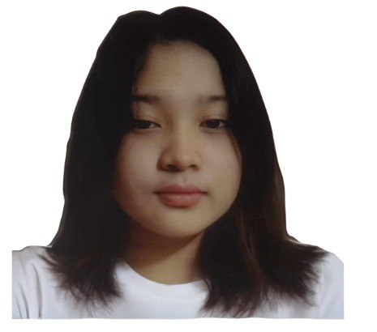

Ge_Ann P. Limitares
Contact
Address: Gozon compund, Malabon City
Mobile: +63 991 484 0645
Email: limitaresgeann.@gmail.com
Personal Details
Birthday:
12/09/2005
Age:
19
Religion:
Catholic
Nationality:
Filipino
Height:
4'11"
Weight:
72 kg
Objective / Purpose of Application
To gain valuable experience and enhance my knowledge in the field of Information Technology while contributing my skills, creativity, and eagerness to learn. As a second-year BSIT student, my goal is to apply my learning in real situations, improve my technical abilities, and grow as a future IT professional..
Related IT Skills
HTML(standard)
CSS(average)
JavaScript(basic)
Basic Networking
MS Office
Git / GitHub
SQL (basic)
Educational Background
Epifanio Delos Santos Elementary School
Elementary (2018-2012)
Tugatog National High School
Junior High - STEM (2018-2022)
Arellano University Jose Rizal Campus
Senior High - STEM (2022-2024)
Global Reciprocal Colleges
Bachelor of Science in Information Technology (Currently 2nd year)
Working Experience
Online Buy and Sell (Self-Employed)/Facebook Marketplace & Group Pages 2021-2025
Additional
I am an explorer and business-minded individual who enjoys discovering new opportunities online, such as engaging in buy-and-sell activities through gaming platforms. My curiosity often drives me to stay up late learning and exploring different things. This is also the reason why I chose the field of Information Technology—because it is full of innovation, offers a wide range of knowledge to study, and provides countless opportunities for growth. I believe I will enjoy the journey since IT is a broad field that allows me to continuously learn and improve.